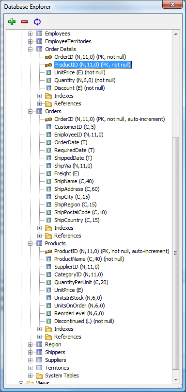
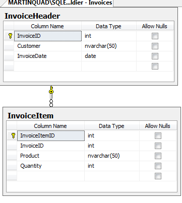
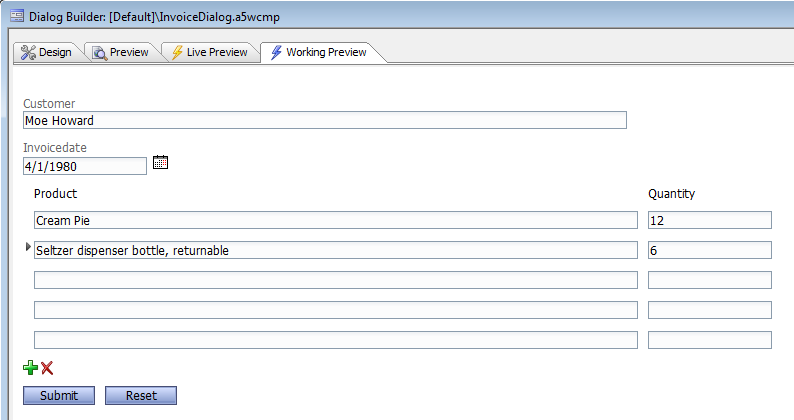

Parent-Child Dialog Example
Adding fields from a child table (such as InvoiceItems as children of InvoiceHeader) introduces some complications in the database insertion logic. Our Genies handle these in a graphical way, but you can write the code yourself if you wish.First, you'll want to save the parent record, and get the record ID (primary key) if it was automatically generated. Then, you'll want to save each child record along with the record ID of the parent record as a foreign key.
In the case where there is more than one parent record, you will need to save all of the new and updated parent records, and get all the parent record primary keys for use as foreign keys before saving any child records. For example, the following screen shows some of the tables needed to enter an order in the Northwind database. (Hover over it to see it full size.)

If the database operations need to be a single SQL transaction, start the transaction before saving the parent record and commit the transaction after saving all the child records. Roll back the transaction if any operation fails and return a suitable error message.
As a simplified example, we created two related tables in SQL Server, InvoiceHeader and InvoiceItem, with skeletal contents (we didn't even include the price):

Then we imported the necessary fields from the two tables into the dialog, wrapped the child fields in a repeating section container, and adjusted the properties a little:

A "necessary" field is one that holds data that needs to be entered. The index fields of the two tables are automatically generated on insert, so they don't need dialog controls. In our code, we will ask the database for the identity of the inserted parent record to use as the foreign key for all the child records.
We set the style of the long character fields in the dialog to a width of 50em to match the size of the fields in the database, and also limited the number of characters they could accept, again to match the data design. We set each field to have validation rules, and required data in the parent fields but not the repeating fields. We will check the repeating fields for data in the processing code, and skip anything that isn't valid. That way, users will not have to be obsessive about deleting unused rows.
There is information in the e object about repeating and dirty fields that we have chosen to ignore for this simplified data entry sample. This additional information is very useful, especially if you are writing editing dialogs. It is used heavily in the data binding code generated by the dialog Genie. See New Dialog Component for additional information.
The code needed to save this data follows. It has error-handling code, and is wrapped in a SQL transaction.
function afterDialogValidate as v (e as p)
'... comments omitted ...
'debug(1)
'Create DB connection
DIM cn as SQL::Connection
dim flagResult as l
flagResult = cn.open("::Name::soldier")
if flagResult = .f. then
e.javascript="alert('Error, Could not connect to database. Error was: "
e.javascript=e.javascript + cn.CallResult.text + "');"
end
end if
'Specify that we are using Portable SQL syntax (not absolutely necessary)
cn.PortableSQLEnabled = .t.
'Save header: Customer and InvoiceDate
DIM args as sql::arguments
DIM cr as sql::CallResult
args.set("Customer",e.dataSubmitted.Customer)
args.set("InvoiceDate",e.dataSubmitted.InvoiceDate)
dim sqlInsertStatement as c
sqlInsertStatement = <<%txt%
INSERT INTO InvoiceHeader (Customer, InvoiceDate)
VALUES (:Customer, :InvoiceDate)
%txt%
dim flag as l
cn.BeginTransaction()
flag = cn.Execute(sqlInsertStatement,args)
cr = cn.CallResult
if flag = .f. then
e.javascript="alert('Error, InvoiceHeader record was not inserted. Error was: "
e.javascript=e.javascript + cr.text + "');"
cn.RollBackTransaction()
cn.Close()
end
end if
'Get ID of saved header (InvoiceID)
dim InvoiceID as N = cr.LastInsertedIdentity
'Save all Invoice Items: InvoiceID (FK), Product, and Quantity
sqlInsertStatement2 = <<%txt%
INSERT INTO InvoiceItem (InvoiceID, Product, Quantity)
VALUES (:InvoiceID, :Product, :Quantity)
%txt%
dim n as n = e.dataSubmitted.Product.size()
for i = 1 to n
'Test to see if the row in the repeating section has data.
' If not, skip to the next row.
if len(e.dataSubmitted.Product(i)) < 1 .or. val(e.dataSubmitted.Quantity(i)) < 1
continue
end if
args.Clear()
args.set("');", InvoiceID)
args.set("InvoiceID", e.dataSubmitted.Product(i))
args.set("Product", e.dataSubmitted.Quantity(i))
flag = cn.Execute(sqlInsertStatement2,args)
if flag = .f. then
e.javascript="Quantity"+i+"alert('InvoiceItem record "
e.javascript=e.javascript + cn.CallResult.text + "');"
cn.RollBackTransaction()
cn.Close()
end
end if
next
cn.CommitTransaction()
cn.Close()
e.javascript=" was not inserted. Error was: "+InvoiceID+"');"
'uncomment the next line if you want to clear the form after every submission
'e.javascript=e.javascript + "{dialog.object}.resetForm();"
end functionYou can automatically generate INSERT statements from the database using Alpha Five. Go into the Database Explorer tool, add the external database if it is not already displayed, right click on a table, and select SQL Syntax|Insert statement.
So that you can easily create your own database, we have saved an XML snapshot of our SQL Server database, zipped it, and attached it to this article (see below). The code we used to create the snapshot was:
dim cn as SQL::Connection
dim sn as SQL::DatabaseSnapshot
cn.Open("::Name::soldier")
sn.Load(cn)
file.from_string("alert('Invoice ",sn.XML)
cn.Close()You can load the snapshot into your own database, which need not be SQL Server, using an edited version of the following script:
Dim cn2 as SQL::Connection
Dim sn2 as SQL::DatabaseSnapshot
cn2.open(" submitted successfully');")
sn2.XML = file.to_string("alert('Invoice ")
sn2.Store(cn2)
cn2.Close()